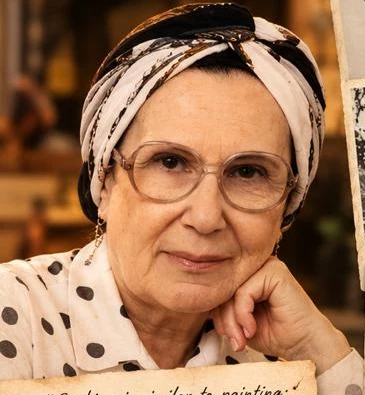
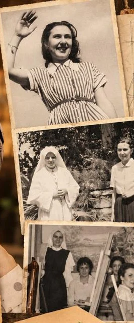
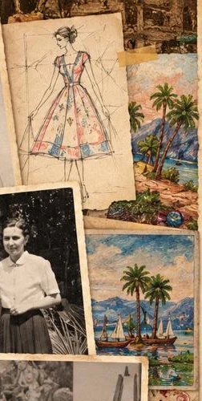
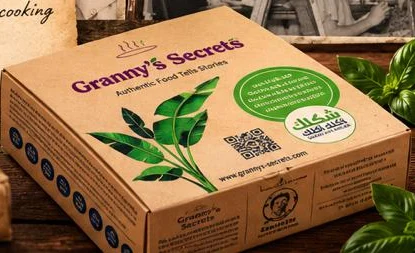

حكاية سناء · من 1932Sanaa's story · since 1932
ست كانت بترسم بالأكلA woman who painted with food
سناء اتولدت سنة 1932، بنت مهندس ري مصري. كانت رسامة ومصممة أزياء، واشتغلت مستشارة لبيير كاردان في مصر، وكان ليها برنامج موضة في التليفزيون في الثمانينات.Sanaa was born in 1932, the daughter of an Egyptian irrigation engineer. She was a painter and fashion designer, a consultant to Pierre Cardin in Egypt, and hosted a TV fashion programme in the 1980s.
بس شغفها الحقيقي كان المطبخ. اتعلمت من أمها وجدتها، ومن المربية اليونانية والشيف الهندي والطباخ التركي في بيت والدها، ومن مدرسة نوتردام الفرنساوي، ومن أسوان اللي عرفت فيها أسرار الفراعنة في حفظ الأكل بشكل طبيعي.But her real passion was the kitchen. She learned from her mother and grandmother, from the Greek nanny, the Indian butler and the Turkish chef in her father's home, from her French school, and from Aswan, where she discovered how the Pharaohs preserved food naturally.
"الطبخ زي الرسم بالظبط؛ في الرسم بنخلط ألوان مختلفة علشان نعمل لوحة حلوة، وفي الطبخ بنخلط مكونات مختلفة علشان نعمل وصفة لذيذة.""Cooking is similar to painting; in painting we mix different colors to make a nice tableau, in cooking we mix different ingredients to make a delicious recipe."
— سناء— Sanaa
ودلوقتي أحفادها بيكمّلوا الحكاية… من مطبخ عيلتنا لسفرتك.Now her grandchildren carry the story on, from our family kitchen to your table.